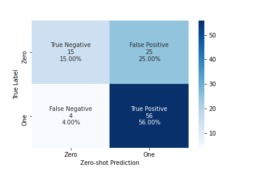

Zero-shot Classify Big 5 Personality
Zero-shot Classify Big 5 Personality
Oct 27, 2020 📖 15 min read


Zero Chance of Getting Help to Label Data?
We've all seen this movie. State-of-the-art (SOTA) natural-language processing (NLP) models are tremendously powerful, but there is a catch. They need lots of annotated labels or ratings from subject matter experts (SMEs) to train a model. Is there an easier way? Let's examine  Hugging Face zero-shot learning or (ZSL) to classify text responses in terms of the Big 5 personality traits without hand-crafted human annotations/labels/ratings.
Hugging Face zero-shot learning or (ZSL) to classify text responses in terms of the Big 5 personality traits without hand-crafted human annotations/labels/ratings.
Summary
TLDR: zero-shot looks like an excellent tool for lower-stakes measurement, but for higher-stakes settings such as evaluating someone for a job we need further evidence.
Specifically, we
- Classified scenario based text responses in terms of the Big 5 personality traits
- Psychometric validity evidence of ZSL was pretty encouraging
- Face validity – ZSL scores passed the eyeball test
- Convergent validity – ZSL scores were positively related to self-report scores of corresponding traits
- ZSL was a bit overzealous compared to expert gold standards
- ZSL did a nice job of classifying agreeable responses as agreeable
- ZSL struggled to classify only relevant responses as agreeable
- ZSL maintained an inter-rater agreement/reliability approximately 50% to goal
Classification as Natural Language Inference (NLI)
The magic of ZSL is we can classify a written text response in terms of a personality trait we didn't explicitly train a model to learn. No more managing labeling projects?!  Here is Joe Davison of Hugging Face describing this NLI approach brought forth by Yin et al. (2019).
Here is Joe Davison of Hugging Face describing this NLI approach brought forth by Yin et al. (2019).
Quotes
Traditionally, zero-shot learning (ZSL) most often referred to a fairly specific type of task: learn a classifier on one set of labels and then evaluate on a different set of labels that the classifier has never seen before.
The approach, proposed by Yin et al. (2019), uses a pre-trained MNLI sequence-pair classifier as an out-of-the-box zero-shot text classifier that actually works pretty well. The idea is to take the sequence we're interested in labeling as the "premise" and to turn each candidate label into a "hypothesis." If the NLI model predicts that the premise "entails" the hypothesis, we take the label to be true..
Connecting the dots, we're going to evaluate this ZSL approach on a different set of labels (e.g., Big 5 personality) that the classifier hasn't seen.
Explore and Compare ZSL to Old School Psychometrics
 – intriguing – there is a long history of measuring individual differences of cognitive ability, personality, interests, etc. – especially useful for determining those that are more likely to be succesful on a job compared to those that are less likely to be succesful. That is, let's examine ZSL from a more old school, validity perspective. What kind of evidence is there ZSL scores or model inferences are measuring what we think they are measuring.
– intriguing – there is a long history of measuring individual differences of cognitive ability, personality, interests, etc. – especially useful for determining those that are more likely to be succesful on a job compared to those that are less likely to be succesful. That is, let's examine ZSL from a more old school, validity perspective. What kind of evidence is there ZSL scores or model inferences are measuring what we think they are measuring.
Big 5 Personality Data
Let's leverage the SIOP 2019 machine learning competition data. These data include (1) self-report Big 5 questionnaire responses, and more interestingly (2) open-ended scenario-based responses. The Big 5 is a debated, yet well-respected framework to measure personality. On average, Big 5 personality traits predict future job performance (e.g., Hurtz & Donovan, 2000)
 Self-report Responses
Self-report Responses
Over a thousand mturkers were asked to respond to a common, self-report Big 5 personality questionnaire. This is a typical scantron type endeavor where each person ends up with an average score for each trait.
 Scenario Responses
Scenario Responses
These individuals were also asked to respond, in their own words, to five open-ended work scenarios referred to as a situational judgment test (SJT) in the assessment industry. Each scenario question was designed to elicit behaviors in terms of a specific Big 5 trait. Here  you can read the scenario prompts for each of the Big 5 traits.
you can read the scenario prompts for each of the Big 5 traits.
A colleague of yours has requested vacation for the same week as you. According to your supervisor one of you has to take a different week of vacation because it would be too busy at work if both of you are absent. Your colleague is not willing to change their vacation plans. What would you do and why?
You have a project due in two weeks. Your workload is light leading up to the due date. You have confidence in your ability to handle the project, but are aware sometimes your boss gives you last tasks that can take significant amounts of time and attention. How would you handle this project and why?
You and a colleague have had a long day at work and you just find out you have been invited to a networking meeting with one of your largest clients. Your colleague is leaning towards not going and if they don't go you won’t know anyone there. What would you do and why?
Your manager just gave you some negative feedback at work. You don’t agree with the feedback and don’t believe that it is true. Yet the feedback could carry real consequences (e.g., losing your annual bonus). How do you feel about this situation? What would you do?
The company closed a deal with a client from Norway and asks who would like to volunteer to be involved on the project. That person would have to learn some things about the country and culture but doesn't necessarily need to travel. Would you find this experience enjoyable or boring? Why?
Evaluate Responses
We have a TON of written responses for each scenario. What next? We'd love to have a team of experts evaluate responses in terms of each trait. A (0; zero) would reflect a response is for example not agreeable whereas a (1; one) would reflect an agreeable response (for the scenario designed to elicit [not] agreeable responses). However, let's assume we don't have the resources to label the responses for weeks.
Enter zero-shot learning (ZSL) to save the day?! Recall the scenario above, "A colleague of yours has requested vacation for the same week as you…" Let's evaluate the agreeableness of those responses using ZSL.
 Example Code & Responses
Example Code & Responses
The Python syntax is pretty simple.
Code
!pip install git+https://github.com/huggingface/transformers.git
from transformers import pipeline
classifier = pipeline("zero-shot-classification")
sequence = ('I would immediately tell my boss and colleague that if I am not able to take my requested vacation, ' 'then I will quit. I would explain to them that its unfair that I cant take a well needed vacation just because '
'my coworker wants one. Also, I would question my boss as to why he believes it would be too busy at work if we ' 'both decided to take a vacation. Lastly, I would frankly tell them that I am not allowing my coworker to take '
'a vacation at all and that I will not give in.')
candidate_labels = ['agreeableness', 'conscientiousness', 'extraversion', 'neuroticism', 'openness']
hypothesis_template = 'This response is characterized by {}.'
classifier(sequence, candidate_labels, multi_class=True, hypothesis_template=hypothesis_template)
## output
##
## {'labels': ['conscientiousness',
## 'openness',
## 'extraversion',
## 'neuroticism',
## 'agreeableness'],
## 'scores': [0.9638389348983765,
## 0.9625383019447327,
## 0.7236202359199524,
## 0.619651198387146,
## 0.04535089433193207],
## 'sequence': 'I would immediately tell my boss and colleague that if I am not able to take my requested vacation, ## then I will quit. I would explain to them that its unfair that I cant take a well needed vacation just because my ## coworker wants one. Also, I would question my boss as to why he believes it would be too busy at work if we both ## decided to take a vacation. Lastly, I would frankly tell them that I am not allowing my coworker to take a
## vacation at all and that I will not give in.'}
Probabilities ranging from .50 to 1.00 reflect a classification of an agreeable response 💁🏽 whereas those between 0 and .50 reflect a classification of a disagreeable response 🙅🏽 For the specific example provided in the code directly above, the probability the agreeableness label is true is very low, 5%. Here's some more example responses and corresponding scores
Examples of Agreeable Responses
I would do it because I assume that my colleague must have asked first. I would ask my supervisor if that is the case and what the criteria was. I would honor the request with no problems if it was fair. I would take my vacation another week.
Probability agreeableness label is true: 94% 💁🏽
As far as company vacations are concerned, I think it should be "the first to schedule it gets it," but I'd probably talk to my colleague and try to find out why that particular week is so important to him/her. It s/he is going somewhere for a wedding, an anniversary, or some other special occasion that can't be postponed, I'd probably let him/her take that week off and postpone my own plans. I don't have any family anymore, so I'm fairly flexible.
Probability agreeableness label is true: 80% 💁🏿
I would make another appeal to my supervisor. I would bring him/her ideas on how to cover with both of us being out for the week. If that fails, and knowing my coworker is inflexible, I would have to take a different week. I wouldn't be happy about it, but such is life.
Probability agreeableness label is true: 57% 💁🏻
Not Agreeable Responses
I would ask them what they were doing on their vacation. If it was something important like a child's wedding or a birth and I didn't have important plans, I would let them go. If I had important plans and they didn't I would explain to them and to my boss that my plans were too important to switch.
Probability agreeableness label is true: 46% 🙅🏿
It all really matters the reasoning behind my vacation. Do i have something planned and already bought for? Or was it just the spur of the moment? If it is already paid for and things, than I would ask to know who requested time off first. Whoever was last should be the one that changes their week.
Probability agreeableness label is true: 10% 🙅🏻
I would immediately tell my boss and colleague that if I am not able to take my requested vacation, then I will quit. I would explain to them that it's unfair that I can't take a well needed vacation just because my coworker wants one. Also, I would question my boss as to why he believes it would be too busy at work if we both decided to take a vacation. Lastly, I would frankly tell them that I am not allowing my coworker to take a vacation at all and that I will not give in.
Probability agreeableness label is true: 5% 🙅🏽
 Face Validity
Face Validity
Nice! Upon first blush  – this approach appears to be passing the eyeball test (i.e., face valdity). Let's look closer.
– this approach appears to be passing the eyeball test (i.e., face valdity). Let's look closer.
Construct Validity of ZSL & Self-report
Let's look at more validity evidence to examine if the ZSL scores when responding to an SJT is measuring what we think it's supposed to be measuring. An old-school psychometrician (See: Samuel Messick) would want to examine the convergent and discriminant validity of scenario-based (SJT) and self-report measures.
 This is a fancy way of saying we want there to be a strong, positive relationship (i.e., convergence; correlations) between the ZSL scores and the scores on the self-report questionnaire for each specific trait. We think we're measuring the same thing, for example agreeableness, in different ways (i.e., self-report vs scenario based). How are we doing?
This is a fancy way of saying we want there to be a strong, positive relationship (i.e., convergence; correlations) between the ZSL scores and the scores on the self-report questionnaire for each specific trait. We think we're measuring the same thing, for example agreeableness, in different ways (i.e., self-report vs scenario based). How are we doing?
Convergent Validity Evidence
Table below shows correlations between self-report (rows) and ZSL scores (columns). This is a stripped down version of a multitrait multimethod matrix (MTMM). Here is a nice reference that speaks to a MTMM. TLDR let's focus on the correlations on the diagonal with the icons.
Further MTMM Comments
The checks in the table below are along the validity diagonal and represent monotrait-heteromethod correlations. These are the correlations between two measures of the same trait measured with two different measures–zero-shot inferences of SJT responses and a self-report questionnaire. Since we expect them to be measuring the same trait, they should be strongly and positively correlated. Generalizability Theory is another construct validity approach to consider.
Strong Evidence Moderate Evidence No Evidence
| Agreeableness | Conscientiousness | Extraversion | Neuroticism | Openness | |
|---|---|---|---|---|---|
| Agreeableness | 0.14 | 0.06 | 0.07 | -0.02 | 0.22 |
| Conscientiousness | 0.07 | 0.05 | 0.08 | -0 | 0.13 |
| Extraversion | 0.04 | 0.01 | 0.24 | -0.03 | 0.14 |
| Neuroticism | -0.06 | -0.04 | -0.16 | 0.01 | -0.13 |
| Openness | 0.06 | -0.01 | 0.05 | -0.01 | 0.22 |
 Interesting, these relationships are encouraging; especially for extraversion (, r = .24), openness, and agreeableness – however, conscientiousness and neuroticism (i.e., emotional stability) scores likely didn't demonstrate strong convergent validity evidence because the SJT prompts were worded too strongly and didn't end up promoting meaningful variability/behaviors (Google: Walter Mischel strong vs weak situations). Let's look closer.
Interesting, these relationships are encouraging; especially for extraversion (, r = .24), openness, and agreeableness – however, conscientiousness and neuroticism (i.e., emotional stability) scores likely didn't demonstrate strong convergent validity evidence because the SJT prompts were worded too strongly and didn't end up promoting meaningful variability/behaviors (Google: Walter Mischel strong vs weak situations). Let's look closer.
ZSL Scores vs Expert Labels
 I want to dig deeper here so I rolled up my sleeves and labeled 100 mturker scenario responses in terms of agreeable or not agreeable (one of the Big 5 traits) for the scenario that promoted behavior in terms of agreeableness.
I want to dig deeper here so I rolled up my sleeves and labeled 100 mturker scenario responses in terms of agreeable or not agreeable (one of the Big 5 traits) for the scenario that promoted behavior in terms of agreeableness.
Let's examine the ZSL scores to a gold-standard subject matter evaluation (SME) using multiple perspectives: (1) in the vein of a data scientist using a confusion matrix, and also (2) more along the lines of a behavioral scientist, that is, in terms of inter-rater agreement/reliability. Note: my background is industrial organizational (IO) psychology.
💡 Blending data science and domain expertise typically complements each other well.
Data Science Perspective
As we can see below this paragraph in the 2 × 2 matrix, ZSL does a nice job of classifying agreeable responses (in relation to my ) as agreeable (i.e., Recall = .93). ZSL struggled to classify only relevant responses as agreeable (i.e., Precision = .69). We have quite a few false positives – responses that ZSL  classified as agreeable that are actually not agreeable (in relation to my ). In general, this level of model performance between and is very promising considering the ZSL model wasn't explicitly trained on the difference between an agreeable or disagreeable response.
classified as agreeable that are actually not agreeable (in relation to my ). In general, this level of model performance between and is very promising considering the ZSL model wasn't explicitly trained on the difference between an agreeable or disagreeable response.
The model might be a bit overzealous, nevertheless a respectable F1 Score = .79.

| Metric | |
|---|---|
Accuracy |
.71 |
Precision |
.69 |
Recall |
.93 |
F1 Score |
.79 |
IO Psychology Perspective
Let's imagine an expert and ZSL are knocking elbows evaluating the same written responses. Would they see eye to (robot) eye? The intraclass correlaton ICC1 is a well-respected metric and, at least for this small sample (N = 100), my evaluations are not super in tune with the ZSL. On one hand, one could argue less than .40 is poor.
On the other hand, if
ICC1 = .60is the goal, we are 50% to goal with minimal programming effort.
That is pretty cool.
Derek L Mracek, PhD
| Type | Value | |
|---|---|---|
| ICC1 | Single raters absolute | 0.31 |
| ICC2 | Single random raters | 0.34 |
| ICC3 | Single fixed raters | 0.38 |
| ICC1k | Average raters absolute | 0.47 |
| ICC2k | Average random raters | 0.51 |
| ICC3k | Average fixed raters | 0.55 |
| QWK | Quadratic Weighted Kappa | 0.34 |
Summary
TLDR: zero-shot looks like an excellent tool for lower-stakes measurement, but for higher-stakes settings such as evaluating someone for a job we need further evidence.
Specifically, we
- Classified scenario based text responses in terms of the Big 5 personality traits
- Psychometric validity evidence of ZSL was pretty encouraging
- Face validity – ZSL scores passed the eyeball test
- Convergent validity – ZSL scores were positively related to self-report scores of corresponding traits
- ZSL was a bit overzealous compared to expert gold standards
- ZSL did a nice job of classifying agreeable responses as agreeable
- ZSL struggled to classify only relevant responses as agreeable
- ZSL maintained an inter-rater agreement/reliability approximately 50% to goal